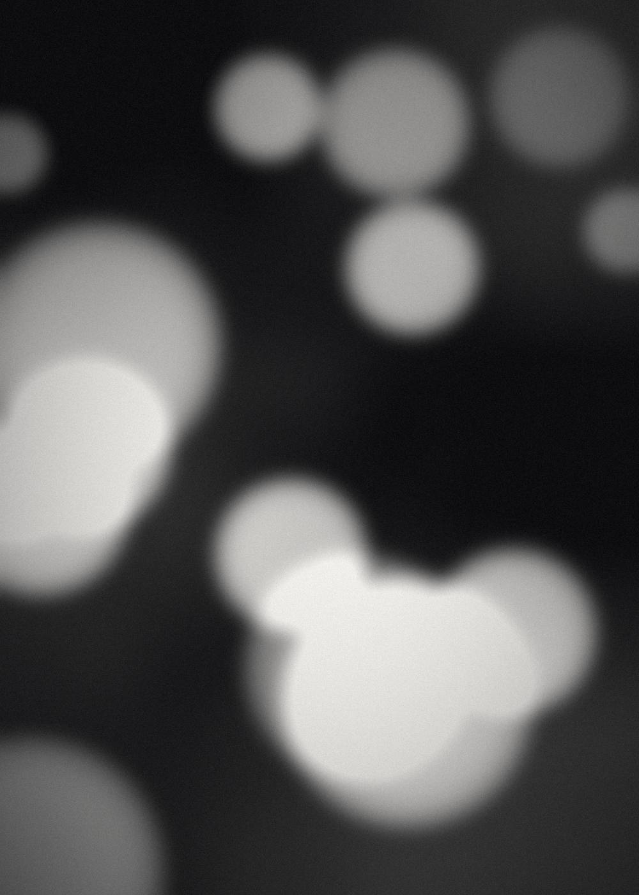
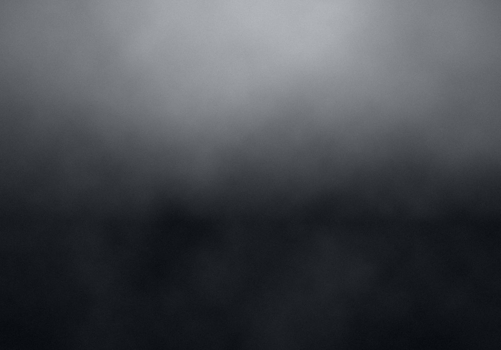
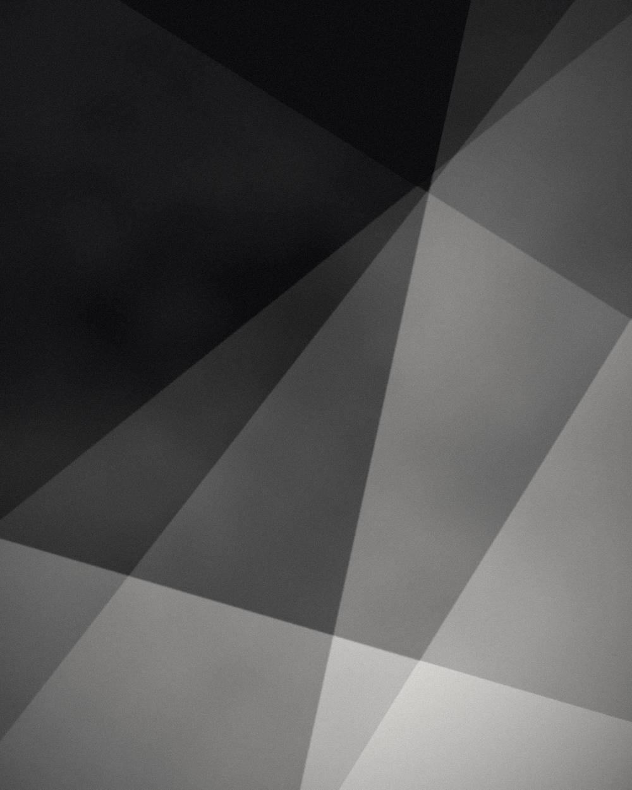
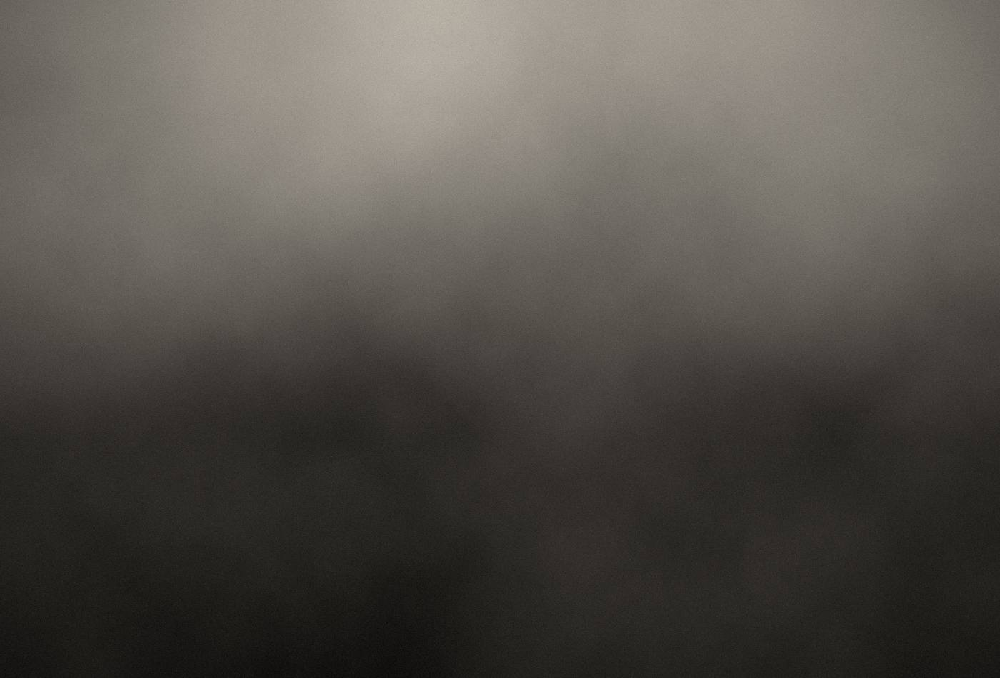
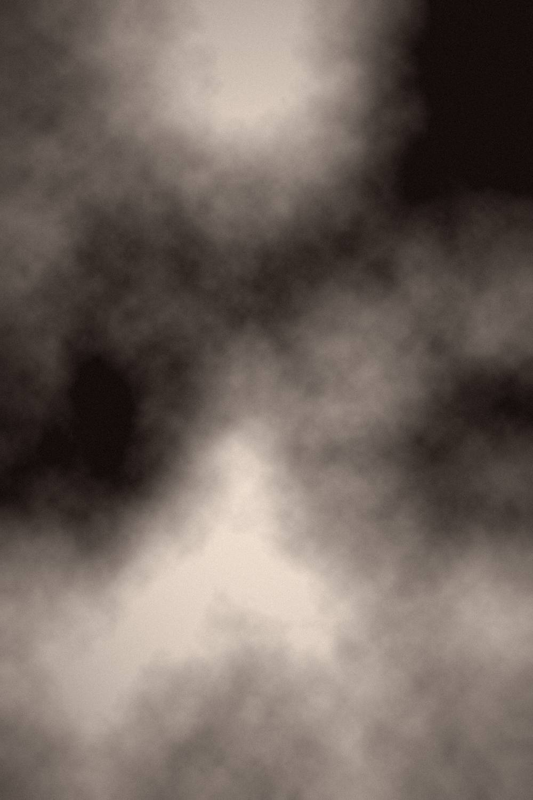
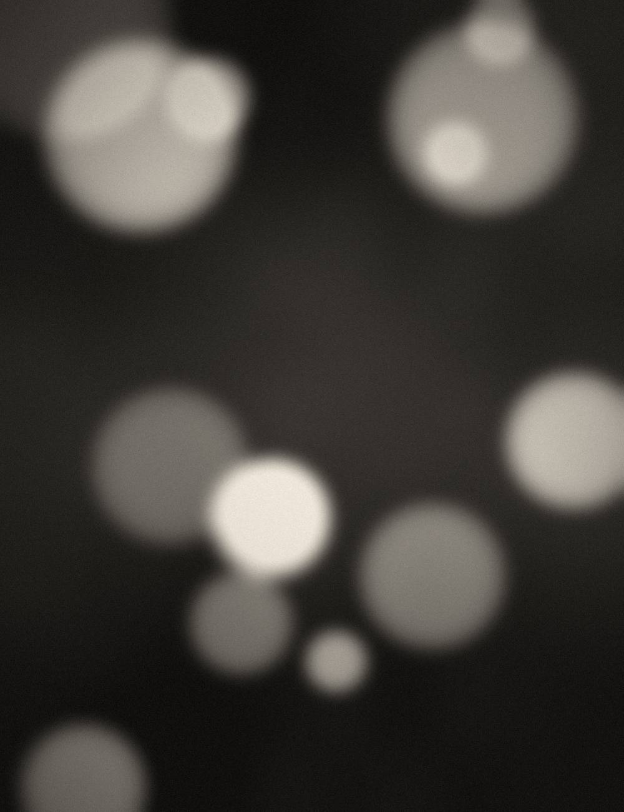
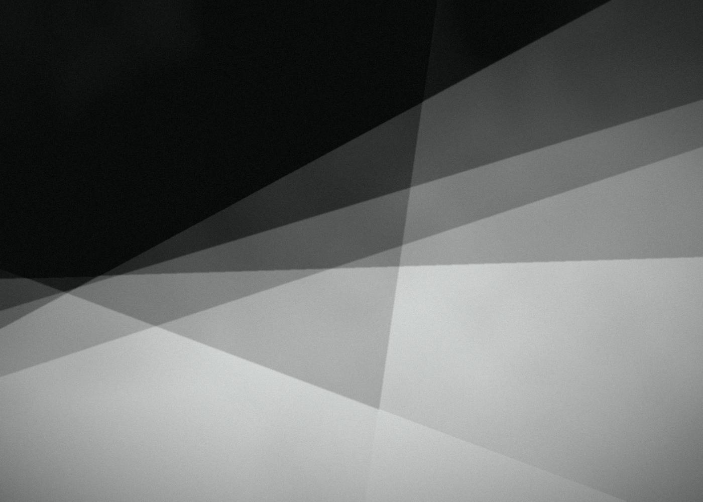
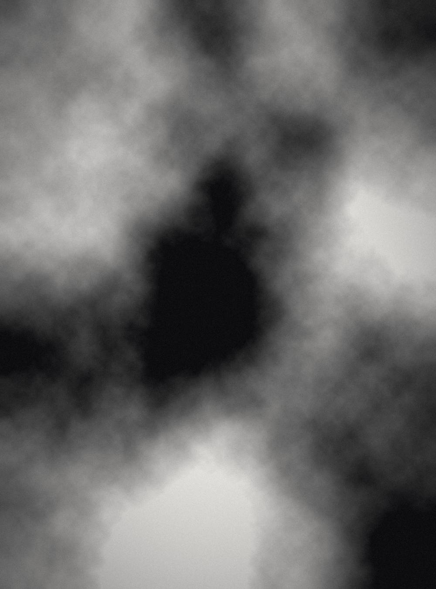
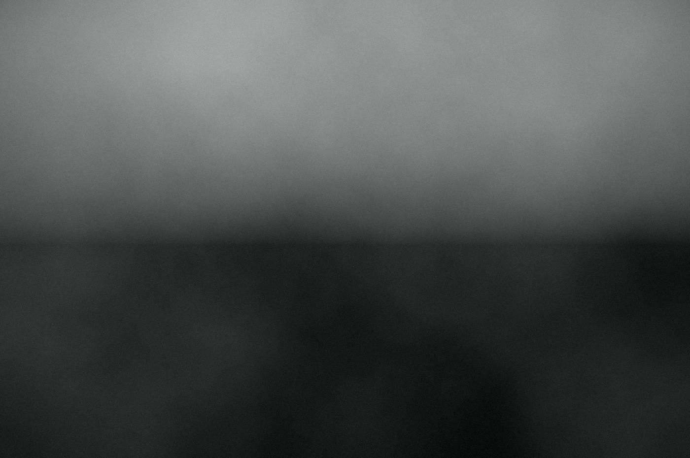
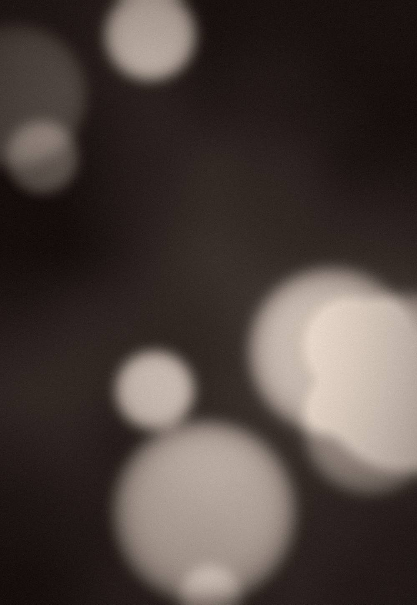
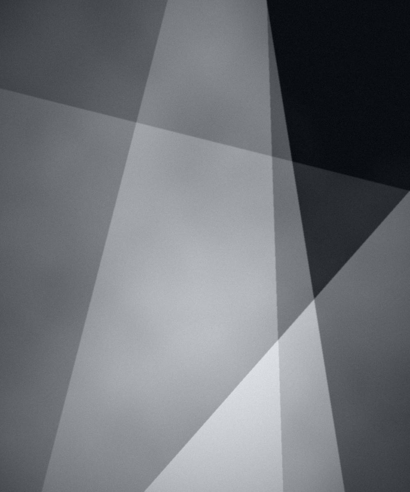
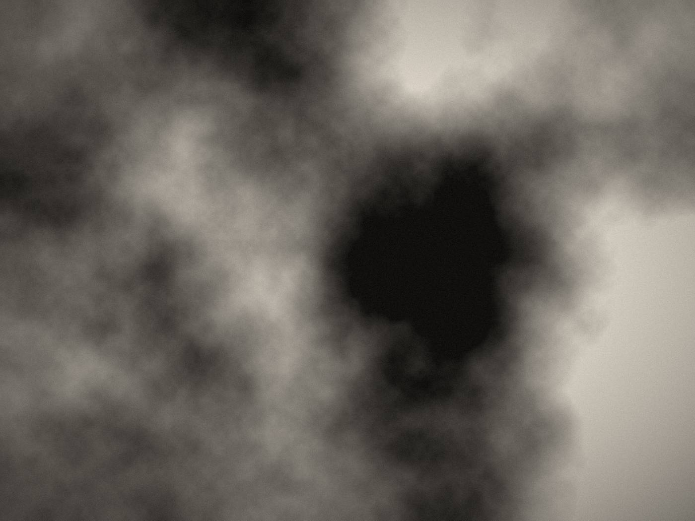
Selected photographs by Guillermo Bernaldo de Quirós. Every frame below is a limited edition print — the gallery shows preview files only.












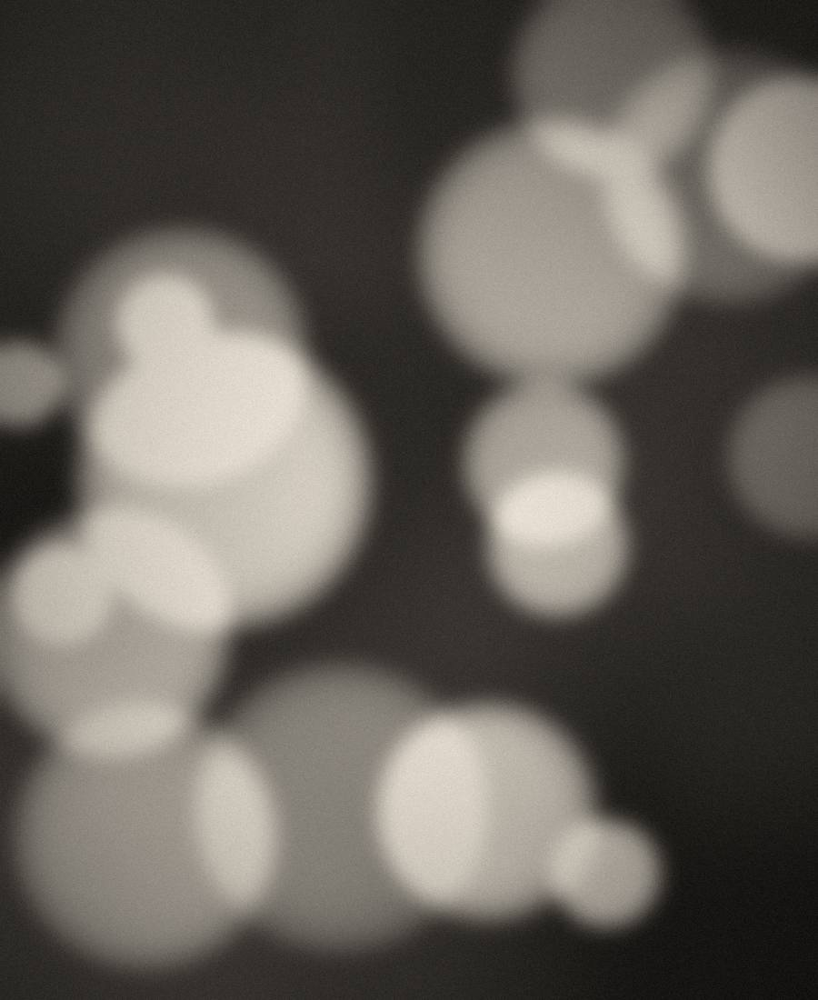
About
Guillermo photographs the ordinary at the moment it stops being ordinary — a wall an hour before sunset, a field going quiet, city lights losing their edges. He works slowly, mostly alone, and usually returns to the same place many times before a frame is worth keeping.
Photography began for him as a way of paying attention. It still is. He is drawn to restraint over spectacle: available light, few frames, and prints made with the same patience the picture was taken with.
Every photograph here is produced as a signed limited edition, printed on archival cotton rag. When an edition closes, it is not reprinted.
Full portfolio on BehanceTell me which photograph you have in mind and I will reply with sizes, framing options and availability.